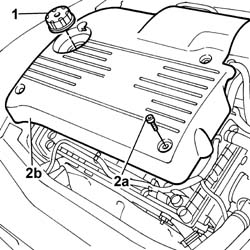

1016A40 Ignition COIL COVER on cylinder head - R.R.
- Path
- Procedures > 10 ENGINE > 1016 CYLINDER HEAD(S) > 1016A TAPPET COVERS > 1016A40 Ignition COIL COVER on cylinder head - R.R.
- Kind
- repair procedure (removal / refitting; the operation number is the code)
- Applies to
- engines: 2.0 TB, 2.4 20V, 3.0 V6, 3.2 V6; all production periods
- Interactive page
- https://sloeber94.github.io/elrnDB-lThss/en/#/74652
Applies to: engines: 2.0 TB, 2.4 20V; all production periods
 Removing
Removing
 Refitting
Refitting1. Undo and remove the engine oil filler plug.
2. Undo the bolts (2a) and remove the ignition coil cover on the cylinder head (2b).

Applies to: engines: 2.0 TB, 2.4 20V; all production periods
Refitting
Removing- Place the ignition coil cover on the cylinder head back in its housing and secure it using the bolts.
 | Value - daNm | Fastening | Component | Ø |
|---|---|---|---|---|
. | 0.9 | Bolt | IGNITION COIL/REEL COVER/S | M6 |
- Fit the engine oil filler plug.
Applies to: engines: 3.0 V6, 3.2 V6; all production periods
- Operation not available
Topics that link to this page (92)
- 0010T44 AUTOMATIC TRANSMISSION FLUID - Change
- 0010T45 AUTOMATIC TRANSMISSION FLUID - Check level and top up if necessary
- 1004B10 POWER UNIT with manual gearbox - R.R.
- 1004B17 POWER UNIT with automatic transmission, complete with support frame, front suspension- R.R. for versions with air conditioning
- 1008A43 Power unit RIGID MOUNT - AUTOMATIC GEARBOX side - R&R
- 1008A44 RIGID REAR power unit MOUNTING - R.R.
- 1008A46 Power unit RIGID MOUNT - TIMING side - R&R
- 1008B10 FLEXIBLE MOUNTING for power unit front support (timing side) - Replace
- 1008B20 Power unit rear support FLEXIBLE MOUNTING - Replace
- 1008C16 BRACKET on BODY for reaction link - R.R.
- 1016A20 SINGLE TAPPET COVER - R.R. AND REPLACE GASKET
- 1016C10 SINGLE CYLINDER HEAD - R.R. and Replace gasket
- 1020D18 Front crankshaft COVER OIL SEAL - Replace
- 1020D26 Flywheel side oil seal COVER - R.R. and Replace seals
- 1024B20 ENGINE FLYWHEEL - R&R for versions with automatic transmission
- 1032B10 TOOTHED timing BELT - R.R. for timing adjustment or replacement
- 1032B46 TOOTHED DRIVE PULLEY/S - R.R.
- 1032B52 TOOTHED DRIVEN PULLEY (one) - R.R.
- 1032C18 Timing belt MOVING TENSIONER - R.R.
- 1032C32 TIMING BELT FIXED TENSIONER - R.R.
- 1032D12 Timing system protective COVER(S) - R.R.
- 1036C10 CAMSHAFTS in cylinder head - R.R.
- 1036C39 timing variator on cylinder head intake camshaft - r r
- 1036H58 HYDRAULIC TAPPETS (all) - R.R. - Includes R.R. camshaft
- 1048B44 RIGID air supply PIPE from heat exchanger to intake manifold - R.R.
- 1056B14 THROTTLE CASING - R.R.
- 1056B48 PHASE TRANSFORMER SOLENOID - R.R.
- 1056B51 CAM ANGLE SENSOR - R.R.
- 1056B60 single fuel manifold pipe, with injectors - r + r
- 1056B82 Injection/ignition system CONTROL UNIT (one) - R.R.
- 1056B87 INJECTION/IGNITION CONTROL UNIT MOUNTING - R.R.
- 1056B90 SYSTEM CABLE LOOM - R.R.
- 1064A19 HOSE CONNECTED to EXHAUST PIPE - R.R.
- 1072B10 INTAKE MANIFOLD - R.R. and Replace gasket
- 1072B48 Air CHAMBER complete with intake manifolds - R.R. and Replace gaskets
- 1072B54 HOSES CONNECTING AIR CHAMBER TO INTAKE MANIFOLD(S) - R.R.
- 1072C10 EXHAUST MANIFOLD - R.R. and Replace seal
- 1072C13 EXHAUST MANIFOLD GASKET - REPLACEMENT
- 1072C44 Exhaust manifold heat shield on BULKHEAD - R.R.
- 1072D50 DEVICE (V.I.S.) with adjustable air ducts - R.R.
- 1072D54 ADJUSTABLE AIR DUCTS (V.I.S.) CONTROL ACTUATOR - R.R.
- 1076B10 Exhaust PIPE assembly - R.R.
- 1080B40 CATALYTIC PRECONVERTER - R.R.
- 1080B62 CATALYTIC CONVERTER - R.R.
- 1080D24 engine oil vapour intake pipe - r + r
- 1080D26 Engine oil idle vapour intake PIPE - R.R.
- 1080D44 one-way valve on oil vapour intake circuit - r+r
- 1080E28 enablement solenoid for flow of fuel vapours to inlet - r+r
- 1084B40 Engine oil supply pipe to turbocharger
- 1084B42 Engine oil return pipe to turbocharger
- 1084C10 Engine oil heat exchanger - R.R.
- 1088B10 Engine coolant SUPPLY RESERVOIR - R.R.
- 1088C10 WATER PUMP - R.R.
- 1088D22 WATER PUMP INLET CONNECTOR - R.R.
- 1088D24 RIGID PIPE for coolant inlet to water pump - R&R
- 1088D36 CONNECTOR ON CRANKCASE FOR CYLINDER HEAD/CRANKCASE WATER CIRCUIT HOSE WITH THERMOSTAT CLOSED - R.R.
- 1088D38 CYLINDER HEAD/CRANKCASE WATER CIRCUIT HOSE WITH THERMOSTAT CLOSED - R.R.
- 1088D47 COOLANT SUPPLY AND RETURN HOSES TO ENGINE OIL HEAT EXCHANGER - R.R.
- 1088E42 ENGINE COOLANT TEMPERATURE MULTIFUNCTION CONTROL UNIT - R.R.
- 1092G10 Engine components single drive BELT - R.R.
- 1092G14 Engine components single belt MOVING TENSIONER - R.R.
- 1092G20 Engine components single belt FIXED TENSIONER - R.R.
- 1092G40 Engine components single belt CAM BELT TENSIONER - R.R.
- 1820B40 FLEXIBLE PIPE from clutch reservoir to master cylinder (pump) - R.R. and Bleed air
- 1820B46 SUPPLY PIPE FROM MASTER CYLINDER (PUMP) - R.R.
- 2110A10 MANUAL GEARBOX and differential - R.R.
- 2130A10 AUTOMATIC TRANSMISSION - R.R.
- 2130A38 Automatic transmission HEAT EXCHANGER - R.R.
- 2130A70 Rubber hose with built in flexible pipe for directing coolant to automatic transmission oil heat exchanger
- 2130A74 Flexible water return pipe to crankcase between rigid pipe and automatic transmission fluid heat exchanger
- 2130B12 Automatic transmission TORQUE CONVERTER - R.R.
- 2130B36 Automatic transmission SOLENOID VALVE COVER - R.R.
- 2130B40 Gear selector SOLENOID VALVE UNIT - R.R.
- 2130B48 GEAR SELECTOR on automatic transmission - R.R.
- 2135A12 Gear engagement CABLE - R.R.
- 2135B58 ELECTRONIC AUTOMATIC TRANSMISSION system WIRING - R.R.
- 3330D10 BRAKE SERVO - R.R.
- 4130B20 POWER ASSISTED STEERING PUMP - R.R.
- 4130B32 POWER STEERING - R.R.
- 4410D10 Front suspension FRAME - R.R.
- 5010A12 engine/heater line - r r
- 5040A20 Air conditioning COMPRESSOR - R.R. - Includes fluid level check and top up if necessary
- 5040A50 PIPE from compressor to air conditioner condenser - R&R
- 5040A54 Pipe from drier filter to expansion valve - R.R.
- 5040B31 Expansion VALVE on evaporator for automatic climate control system - R.R.
- 5505C26 ENGINE COMPARTMENT built in wiring - R.R.
- 5505C31 Under-FACIA WIRING - R.R.
- 5505C40 Passenger compartment wiring - R.R. with interfering components removed
- 5505C41 PASSENGER COMPARTMENT built in WIRING - R.R.
- 5510C10 IGNITION COIL/REEL - R&R
- 5510C44 KNOCK SENSOR (one) - R&R
- 5510C45 DETONATION SENSOR (one- remaining) R.R. after Op. 5510C44